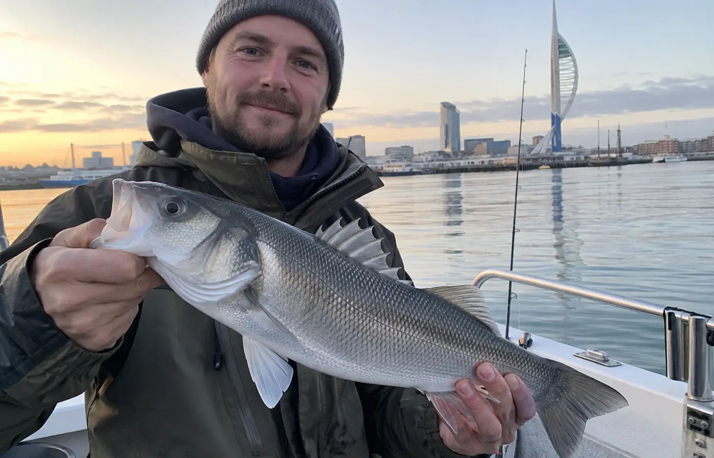
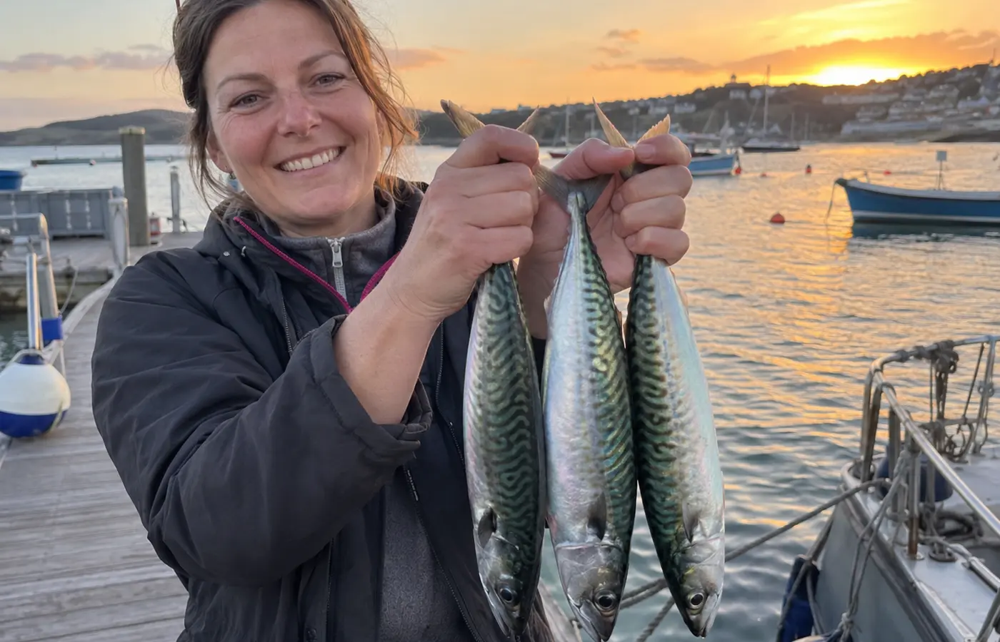
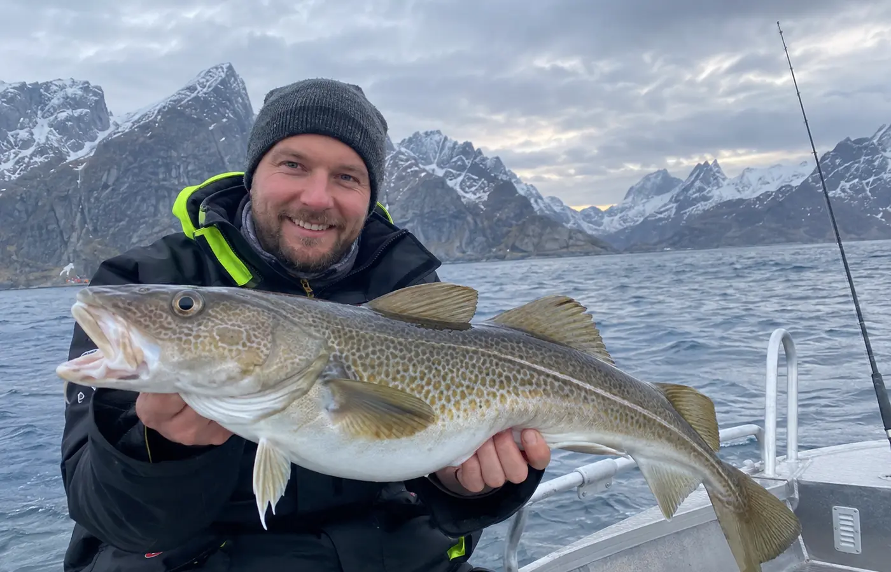

1
Forecast checked automatically
Checking live feedWind, gusts and visibility are being checked for this location.
Live route outlook
Wind, gusts and visibility are being checked for this location.
The relevant marine or river-level source is being checked.
The correct local authority is selected from your fishing location.
Open Portsmouth official notices ↗Everything for your trip
Open a section only when you need more detail.
Check licences, closed seasons, minimum sizes, catch limits, protected species and permitted fishing methods.
Open the relevant official information ↗Confirm parking, shore access, accessible platforms, launch ramps, opening times, toilets, charges and whether night fishing is permitted.
Find a berth or launch option ↓Watch for slippery surfaces, changing water, currents, boat traffic and poor phone reception.
All sources in one place
The app combines available live feeds above and shows what is connected. Official safety links remain here when their data cannot be imported.
Live model data for wind, gusts and visibility from Open-Meteo.
View Open-Meteo source ↗Wave height, period and water temperature for coastal, sea and estuary locations.
View marine data source ↗Nearest available Environment Agency monitoring-station reading for inland locations in England.
View Environment Agency source ↗Met Office inshore waters forecasts include wind, sea state, weather and visibility.
Open Met Office forecast ↗Use current charts and the relevant harbour or water authority notices for hazards and restrictions.
Open ADMIRALTY services ↗Berth & launch
Choose what you need and AnglerRoute will take you directly to an operator website. You enter your booking information once—on the website that manages the reservation.
Free public wildlife data
Explore recorded fish species near the selected location or around the world. Records show observations—not guaranteed fishing spots.
Saved only on this device. Exact coordinates are never made public by AnglerRoute.
Observation data: iNaturalist, using its free public API. Sensitive or obscured coordinates remain protected by the source.
AnglerRoute community
A preview of the future social page. Names, catches and stories below are fictional examples—not live catch reports.

Good morning near the Nab—returned this bass after a quick photo. Calm start, choppier on the way home.

A short evening session with three mackerel for supper. Plenty of life around the headland.

Cold hands, bright skies and a solid cod. The forecast check before launching was worth every minute.
Every kind of fishing water
Compare the environment and safety considerations for saltwater, freshwater and frozen-water fishing.